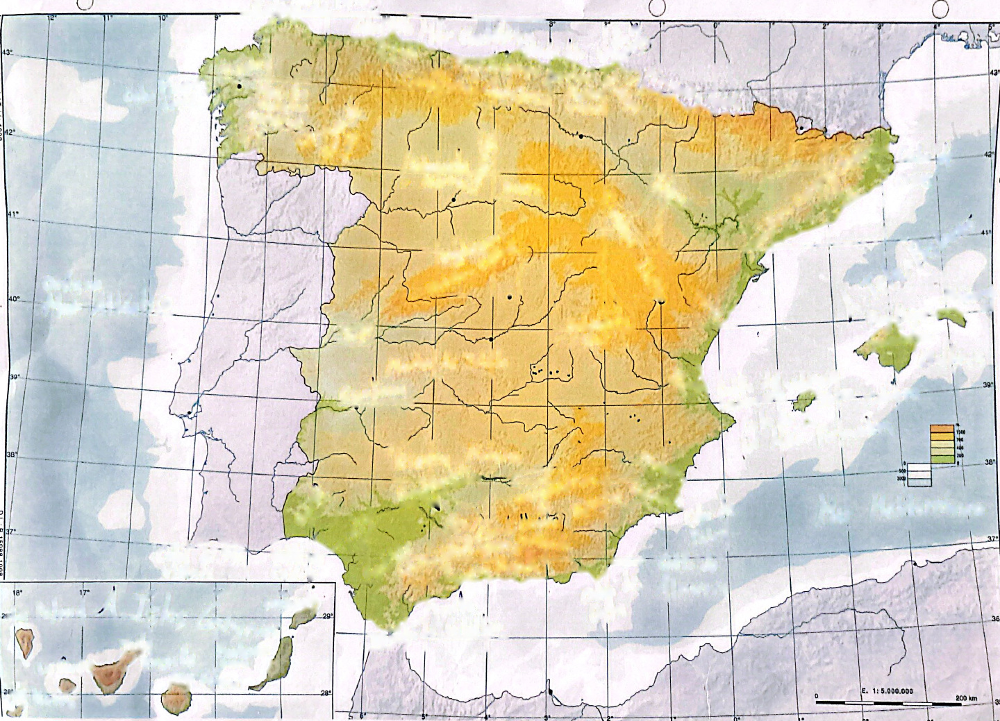

Mapa físico de España

Geografía · 1.º de ESO
Aprende a localizar lo que entra en el examen: península ibérica, Baleares y Canarias.

Nombre _______________________________________ Fecha _______________
Localiza cada lugar en el mapa. Escribe su número y, si hace falta, dibuja una línea hasta el lugar correspondiente.
Mapa base de Editorial Teide.
Nombre _______________________________________ Fecha _______________
Escribe el nombre de cada lugar junto a su número. Si un número lleva una línea, fíjate en el punto donde termina.
Mapa base de Editorial Teide.